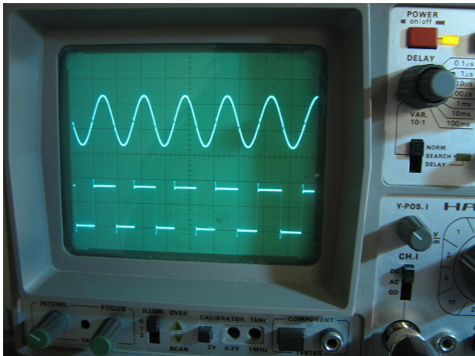

<h3>Dalykai, kuriuos padarėme ar darome:</h3>
<ul>
<li>Kas mėnesį organizuojame <a href="http://www.meetup.com/vilnius-hack-and-tell/">Hack and Tell renginius</a> Vilniuje</li>
<li>Atgaivinsime ir modifikuosime <a href="http://blog.technariumas.lt/post/104323963331/we-decided-to-reward-ourselves-with-a-large">dideles sovietines frezavimo stakles</a>.</li>
<li><a href="http://blog.technariumas.lt/post/105426306766/tv-b-gone">Vedame mokomasias elektronikos pagrindų dirbtuves </a> (naudojame <a href="https://github.com/Miceuz/TV-B-Gone/tree/master/tvbgone-workshop"> mic sukurtą </a>SMD  <a href="http://cornfieldelectronics.com/tvbgone/tvbg.home.php">TV-B-Gone</a> versiją)</li>	
<li><a href="http://ksuarduino.tumblr.com">Dėstome Arduino kursą Kazimiero Simonavičiaus universitete</a></li>
<li>Analizuojame <a href="http://blog.technariumas.lt/post/104072717886/opit-is-about-to-give-a-talk-on-her-recent-work-on">galaktikų sukimąsi</a></li>
<li><a href="https://www.facebook.com/pages/Daikt%C5%B3-meistras/506872139422512?sk=photos_stream&ref=page_internal">Darome daugybę vienetinių projektų buičiai</a> -- restauruojame ir gaminame baldus ir kt.</li>	
<li><a href="http://wemakethings.net/2014/10/14/hp_kbd/">HP prietaiso klaviatūros protokolo atkūrimas</a></li>
<li><a href="http://blog.technariumas.lt/post/103712559081/the-swings-with-wireless-dmx-controlled-leds-we">Sūpynės su belaidžiu DMX valdomais šviestukais</a>, skirtos šokio spektakliui</a>
 
<li><a href="http://wemakethings.net/2013/12/31/eq1_drive/">Automatinio taikinio sekimo sistema mažam teleskopui</a></li>
<li><a href="http://blog.technariumas.lt/tagged/lightpainting">Programuojamų RGB šviestukų juostelė, skirta ilgo išlaikymo fotografijai</a></li>
<li><a href="http://wemakethings.net/2014/04/24/k-thermocouple-lib/">K-tipo termoporų biblioteka įterptinėms sistemoms</a>
<li><a href="http://blog.technariumas.lt/post/97552310636/hacking-a-smpsu">Pigaus maitinimo šaltinio pavertimas automobilinių akumuliatorių pakrovėju</a></li>
<li><a href="http://wemakethings.net/2014/06/23/pieva">Šviesos instaliacija Burning Man festivalyje</a></li>
<li><a href="https://vimeo.com/78537844">Suspausto oro patranka teatro spektakliui</a></li>
<li><a href="http://wemakethings.net/2014/08/08/enameling/">Emaliavimas ir metalo liejimas prarasto vaško metodu</a></li>
<li><a href="http://blog.technariumas.lt/tagged/electricity">Statysime mikro vandens jėgainę </a>prie vandens rato</li>
<li><a href="http://vimeo.com/78911271">Vandens ratas upelyje</a></li>
<li><a href="http://blog.technariumas.lt/post/88881012111/3d-printed-parts-for-the-silicone-meadow">3D spausdinimas</a>
<li>Siūbuojantis dviratis</li>
<li><a href="http://blog.technariumas.lt/tagged/ceramics">Keramika</a></li>
<li>Plastiko pirolizės aparatas</li>
<li>Kameros stabilizavimo sistema</li>
<li><a href="http://wemakethings.net/chirp/">Atviro kodo ir aparatinės įrangos drėgmės sensorius ir augalų laistymo aliarmas</a></li>
<li><a href="https://vimeo.com/80450306">Judesiu valdoma ugnies patranka</a></li>
<li>Mažų laivų restauravimas</li>
<li><a href="http://wemakethings.net/2012/07/27/coffee_roaster_complete">Kavos skrudintuvas iš skalbimo mašinos būgno</a></li>
<li><a href="https://img1.etsystatic.com/033/0/8620093/il_570xN.525007537_drqn.jpg">Muilo gamyba</a></li>
<li>Atviro kodo pH matavimo įtaisas</li>
<li><a href="http://wemakethings.net/2013/10/27/triac-bloc">Atviro kodo ir aparatinės įrangos kieto kūno relė su I2C interfeisu</a></li>
<li><a href="http://wemakethings.net/2013/05/18/dmx-dimmer-case/">Atviras 12 kanalų DMX dimeris</a></li>
<li><a href="http://wemakethings.net/2013/10/12/miner_in_a_fridge_and_radeon_5850_disassembly">4-GPU Litecoin'ų skaičiavimo sistema</a></li>
<li><a href="http://wemakethings.net/2013/10/03/summer-sauna">19a. dūminės pirties atstatymas</a></li>
<li><a href="http://wemakethings.net/archive.html">Ir daug kitų!</a></li>
</ul>

<br />

<p>
Parašykite mums: <a href="mailto:crew@technariumas.lt">crew(a)technariumas.lt</a><br />
</p>
